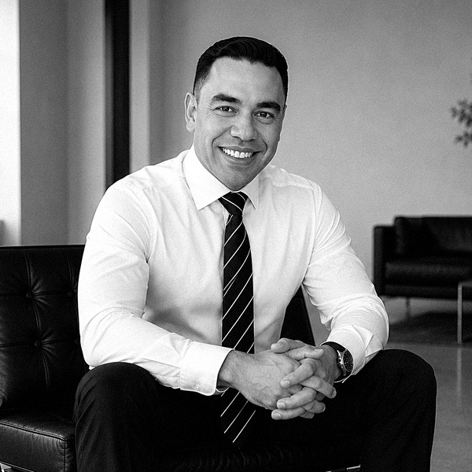

FUNDADOR E CONSELHEIRO
Empresário e gestor de líderes, Anderson Silva construiu mais de 20 anos de trajetória na área da saúde, começando na indústria farmacêutica até criar uma distribuidora de produtos hospitalares voltada à área cardiovascular. De uma virada de rota, passou a se dedicar à formação e ao treinamento de líderes. Inquieto e movido por novos desafios, fundou o Instituto FIDES para unir propósito e experiência, transformando vivência empresarial e de vida em formação de pessoas.
Contrate Anderson Silva